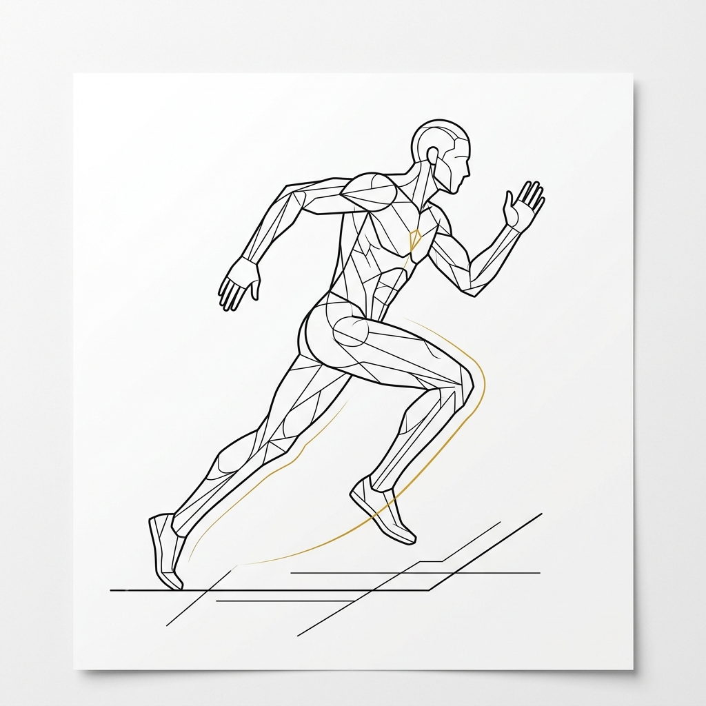
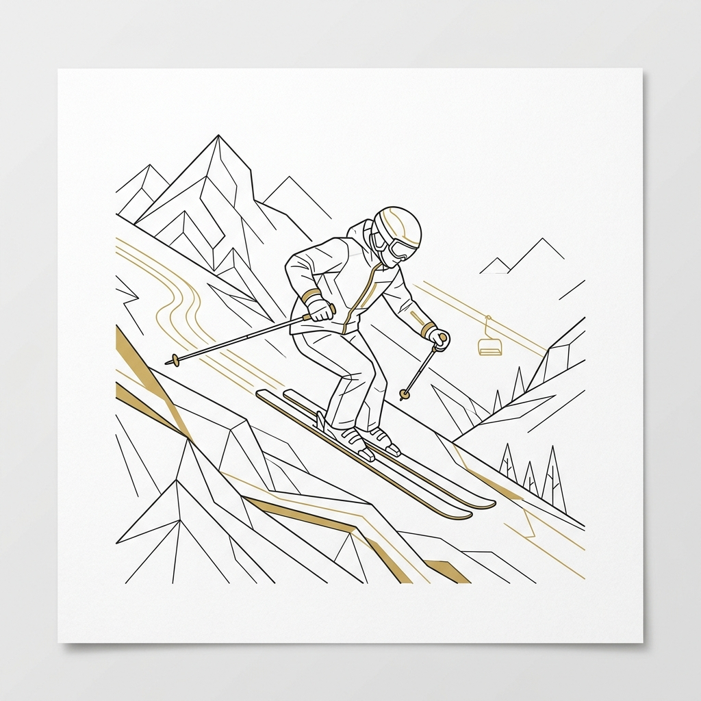
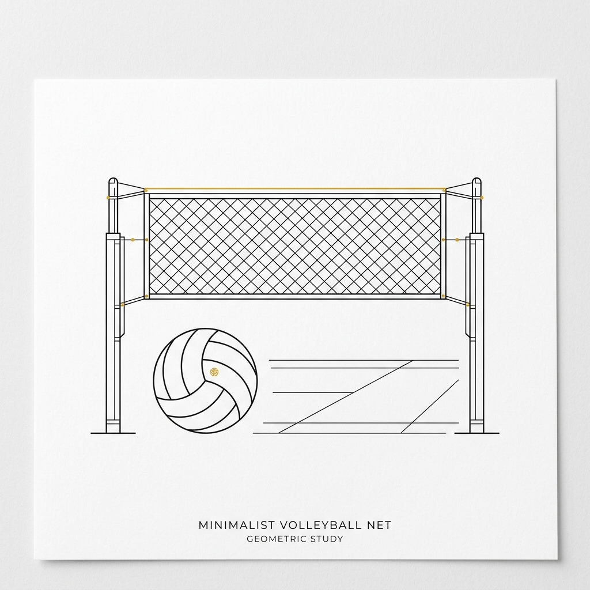
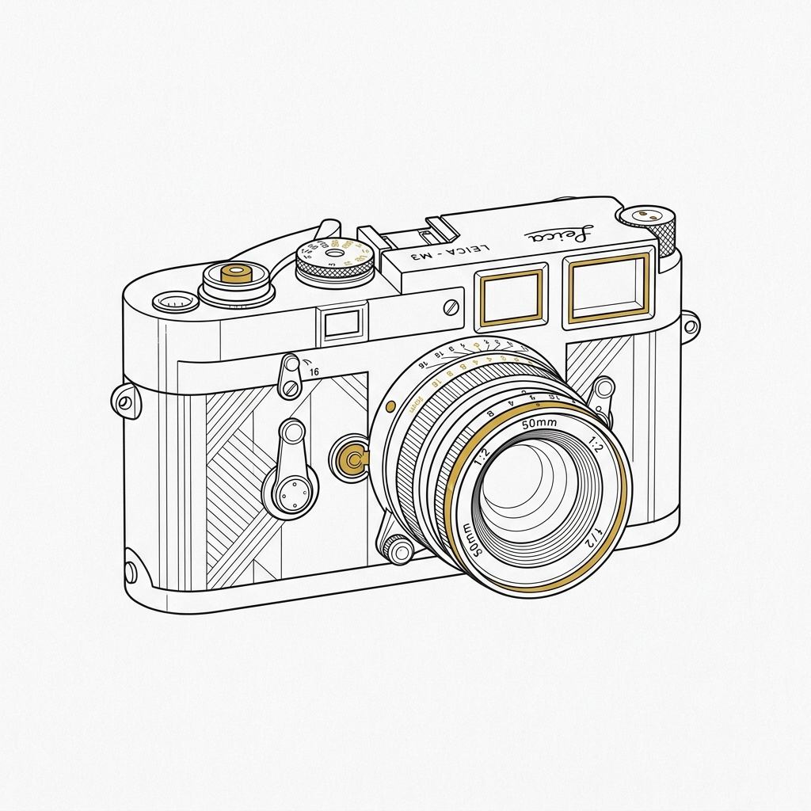
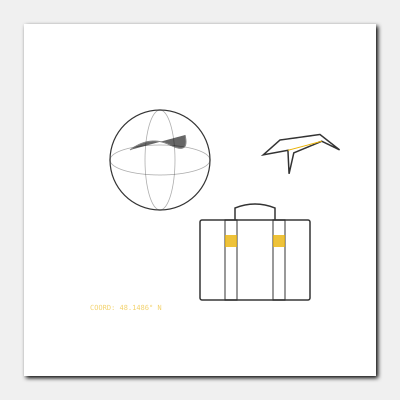
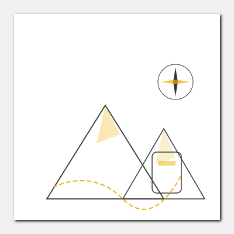

Über mich
Ich bin Bauplanerin mit den Schwerpunkten Sanierung, Projektdokumentation und BIM-Modellierung. Ich arbeite in einem Bereich, in dem technische Präzision auf gestalterisches Denken trifft.
Sanierungen reizen mich wegen der Arbeit mit dem Bestehenden — dem Verständnis der Struktur, des Kontextes und der Rahmenbedingungen, bevor etwas Neues vorgeschlagen wird.
Ich sehe BIM als Methodik, nicht nur als Software. Das digitale Modell ermöglicht es mir, Lösungen zu überprüfen, Gewerke zu koordinieren und mit höherer Genauigkeit zu arbeiten.
Bei meiner Arbeit lege ich Wert auf Präzision, Klarheit und Praktikabilität. Eine gute Dokumentation ist keine Formalität — sie ist die Grundlage für ein qualitatives Ergebnis auf der Baustelle.

Laufen
Eine Art, den Kopf freizubekommen und den eigenen Rhythmus zu halten.

Skifahren
Dynamik, Konzentration und Freude an der Bewegung.

Volleyball
Teamgeist, Energie and ein natürlicher Ausgleich zur Arbeit.

Fotografie
Aufmerksamkeit für Detail, Licht und Komposition.

Sprachen und Reisen
Neue Länder und Kulturen entdecken und den Horizont erweitern.

Wandern
Aktive Erholung in den Bergen und Entdecken neuer Ausblicke.